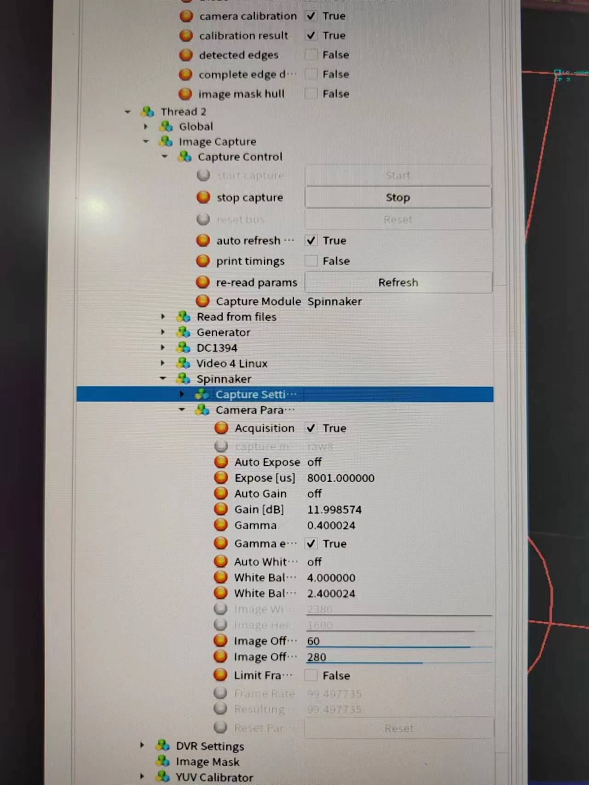
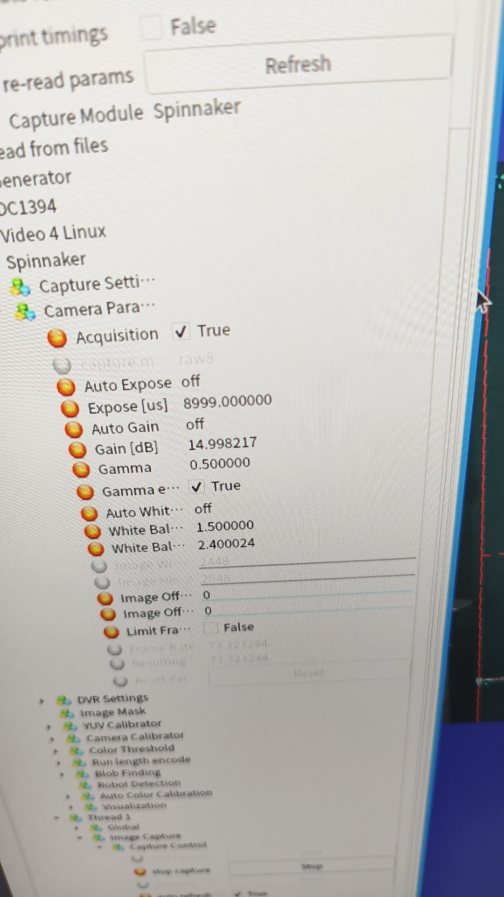
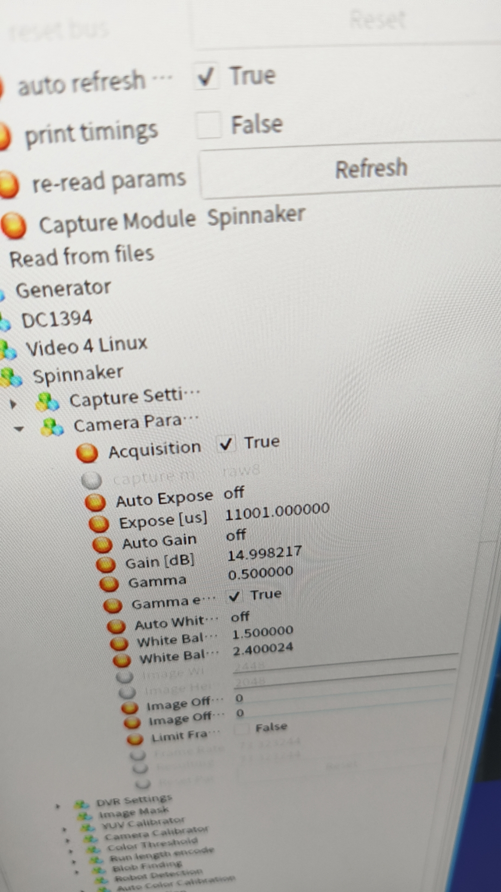
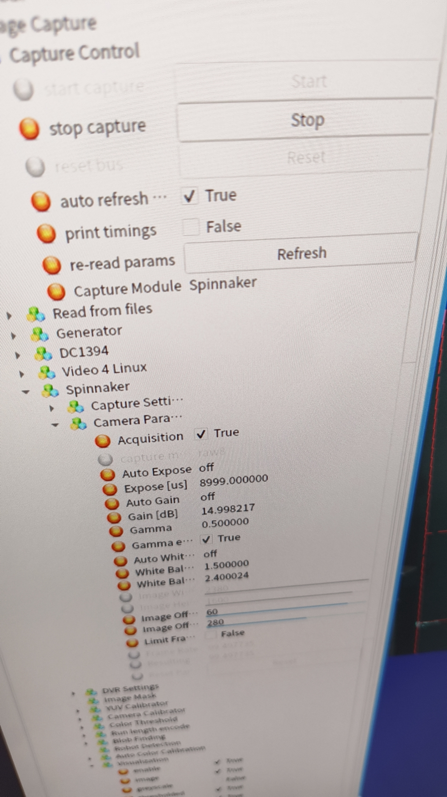
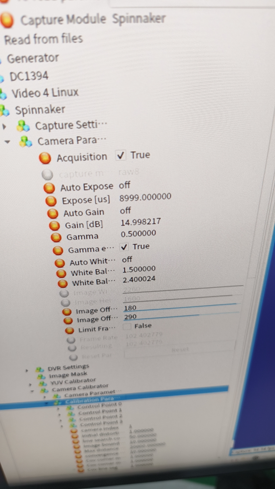

Ubuntu 20.04¶
- UltraISO官方免费试用版就够用
- 进入bios模式每台电脑的快捷键都不太一样，在开机界面会有短暂显示
- 后续硬盘空间分配可不按照帖子内进行，“交换空间”“主分区”“数据分区”可成比例放大
- 刚开始使用ubuntu时部分必要库可能没有安装，可通过apt自行安装
基础技能¶
Linux CMD¶
- cd, ls, mkdir, touch, cp
- sudo, chmod
- lsusb, dmseg
Vim¶
i进入编辑模式，Esc退出编辑模式:进入命令模式，w保存，q退出，后加!进行强制操作shift+g跳转至最后一行
clash¶
- home目录下新建clash文件夹
- 下载clash安装包解压到上述文件夹中
- 命令行输入
wget -o config.yaml "<clash的订阅链接>" - 下载GeoLite2-Country，修改文件名称为
Country.mmdb导入clash文件夹中 - 用chmod修改解压文件的读写权限
- 运行命令
./clash-linux-amd64 -d .或./clash-linux-amd64 -f <第三步生成的文件> -d .即可
ip相关¶
有线网络设置ip、mask、gateway（与falcon使用端搭配进行设定）（缺详细补充）
SSL-Vision¶
安装¶
- Dependency(esp. cam version) :
InstallPackagesUbuntu.sh - Install Camera driver: eg. SPINNAKER and FLYCAP SDK 安装过程中执行其readme中section1~3即可完成配置
- Compilation: 先设定对应的硬件驱动eg.
cmake -B build -DUSE_SPINNAKER=true，后对ssl-vision进行编译make
运行¶
变量树中点击Thread 0->Image Capture->Capture Control->start capture打开对应摄像头
另外可在Thread 0->Visualization中控制可视化参数（如果处理后的帧率过低可关闭可视化）
配置¶
- 场地：变量树中Global->filed configuration->models中选择场地A/B，设定total number of cameras/local number of cameras
- 摄像头：设置摄像头变量树中Thread0->Image Capture->Capture Control->Capture Module更改为Spinnaker
- 摄像头参数：变量树中Thread0->Image Capture->Spinnaker->Camera parameter参照先前已经配置好的视觉机中的参数
- 色卡标定：右侧边栏YUV Calbration
- 场地标定：右侧边栏Camera Calbration先update control points后拖动蓝点到场地标定位置后依次点do initial calibration/detect additional calibration points/do full calibration即可
- 其余Thread重复上述操作
debug¶
- 开启时检查摄像头参数
- 若vision中途崩掉，先关机，保持摄像头顺序不变的情况下进行插拔，检查线连接情况。没问题后开机，重开视觉检查是否有问题。若视觉摄像头顺序错乱，需要重新调整右侧边栏Camera Calbration中摄像头编号，并依次调整场地标定点，摄像头设定高度3000~3500mm。
- 若出现视觉能够发包且有内容但是图像上没有车显示的情况，需检查global设置中针对球和车的过滤像素数量上下限，保证球和车不被滤掉，能够正常显示。
- 经过排查发现以上均正常，可进一步检查摄像头性能，利用lsusb确定摄像头usb位置，进入系统设备管理目录中，对相应的usb利用chmod 777赋予权限，打开spinnaker检查摄像头图像显示，若有问题更换新的摄像头。
附：推荐摄像头参数（2024.04.26 update: 图一为旧参数，目前暂时采用图2-5的参数，依次对应thread0-3）
    
AutoRef & GameController¶
安装¶
- Version: V1.0.0
-
Notation: gamecontroller在本版本中不是默认包含的，需要在run时额外添加指令调用
-
Environment (JDK17): 请参考教程（extra. 需要在 /etc/environment 中配置JAVA_HOME环境变量）
- Build:
./build.sh
运行¶
./gradlew :run -PcompactBuild=false
配置¶
Autoref和GC的端口需要对应
SSL Status Board¶
- Version: V2.10.0
- Configuration: 直接下载release即可，注意对应电脑系统和架构
- Usage: 连接网线，运行app